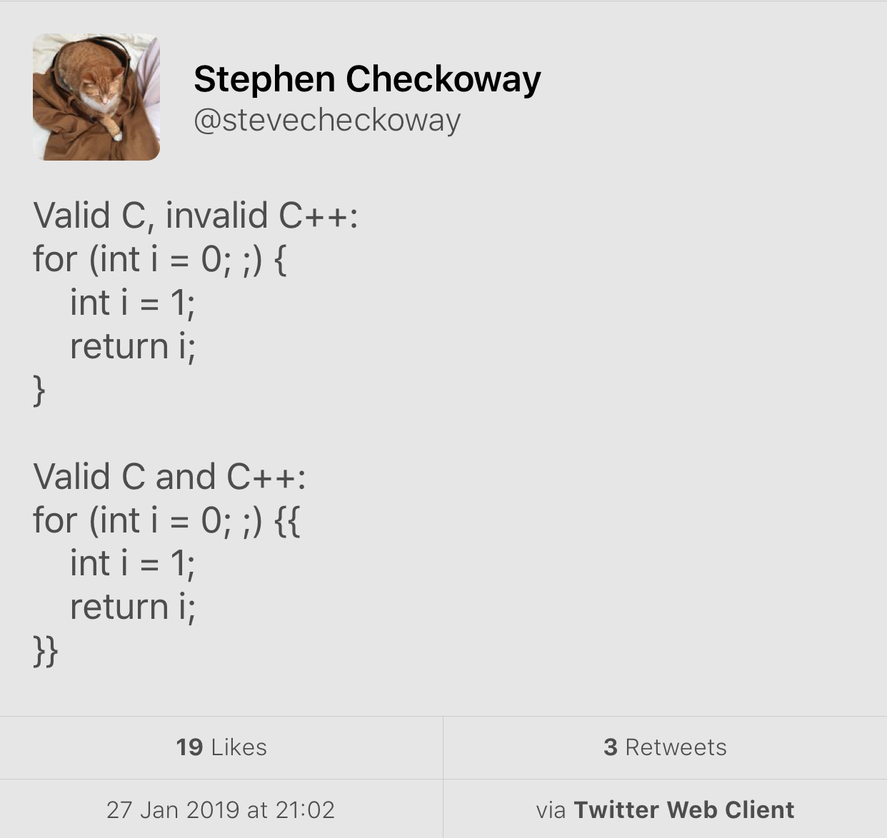

Pre-Kona Papers
mailing2019-01
- P1408R0 Abandon
observer_ptr (Bjarne Stroustrup)
- P1329R0 On the Coroutines TS (Oppose merging of Coroutines TS into the Standard -- prefer Core Coroutines or an alternative where coroutines are "first-class citizens of the language".)
- P1430R0 First-class symmetric coroutines in C++
- P0843R3
static_vector
- P1021R3 Filling holes in CTAD (aggregates, alias templates, inherited constructors)
- P1132R3
out_ptr
- P1337R0 Aliasing the standard library as a means to save C++ (attempt at humour, waste of time)
Pre-Kona Papers
mailing2019-01
- P1392R0 Differences Between Functions and Function Templates (informational)
- P1426R0 Pull the Plug on Contracts? (wow)
- P1433R0 Compile Time Regular Expressions
- P1446R0 Reconsider the Networking TS for inclusion in C++20
- P1371R0 Pattern matching
C++ Modules Might Be Dead-on-Arrival
C vs. C++ for scope
